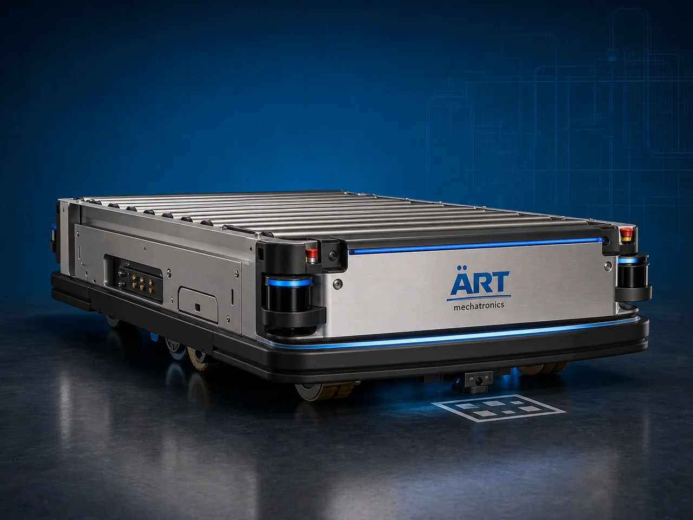

Machine (Automated Guided Vehicle & Autonomous Mobile Robot System)
An AGV / AMR Machine, also known as an Automated Guided Vehicle, Autonomous Mobile Robot, Industrial Mobile Robot, or Smart Material Handling Robot, is an advanced industrial automation solution designed for automatic material transportation, pallet movement, product transfer, warehouse logistics,…

About the Agv/ Amr
AGV and AMR systems are widely used for: ✔ Automatic material transportation ✔ Pallet movement automation ✔ Warehouse logistics handling ✔ Robotic product transfer ✔ Production line feeding ✔ End-of-line packaging movement ✔ Smart factory automation ✔ Industrial inventory handling
The machine improves: ✔ Material handling efficiency ✔ Warehouse automation ✔ Production workflow speed ✔ Labor reduction ✔ Industrial safety ✔ Logistics management ✔ Smart factory productivity
Industrial AGV and AMR machines use: ✔ Intelligent navigation systems ✔ LiDAR and sensor-based guidance ✔ PLC and HMI automation controls ✔ AI-based obstacle detection systems ✔ Robotic motion control technology
to automatically transport materials and products with superior precision, operational efficiency, and intelligent autonomous movement.
AGV and AMR machines are widely used in industries such as:
Food processing industries Beverage industries Chemical industries Automobile industries Cosmetic industries Pharmaceutical industries Warehouse logistics industries FMCG industries
where smart factory automation, unmanned logistics handling, and continuous production operations are essential.
The system is highly suitable for: ✔ Warehouse pallet movement ✔ Production line material feeding ✔ Automatic product transfer ✔ Smart factory logistics ✔ Packaging line automation ✔ Industrial inventory movement
ART Mechatronics offers high-performance AGV and AMR machines, engineered for continuous industrial operation, intelligent autonomous movement, smart logistics handling, and reliable long-term industrial automation.
Working Principle of Agv / Amr Machine
- 1. Task Allocation & Navigation Setup Machine receives transportation instructions through automation software or factory management systems.
- 2. Intelligent Navigation Process Machine automatically navigates through factory or warehouse environment using sensors, LiDAR, mapping systems, and AI-based path planning technology.
Intelligent autonomous navigation ensures safe and accurate material transportation operations.
- 3. Material Handling Operation Machine handles: ✔ Pallets ✔ Cartons ✔ Bags ✔ Raw materials ✔ Finished products ✔ Drums ✔ Packaging products ✔ Industrial inventory items
accurately and continuously.
- 4. Autonomous Transport & Safety Process Machine performs: Automatic route planning Obstacle detection Collision avoidance Pallet lifting Product transfer Automated docking
for efficient and safe industrial logistics operations.
- 5. Smart Automation & Integration Optional systems include: Warehouse management system integration AI-based navigation systems Barcode and RFID scanning Battery charging automation Fleet management systems
- 6. Material Delivery & Return Operation Machine automatically unloads or transfers materials and returns for next operation cycle.
Types of Agv / Amr Machines
- 1. Pallet Transport AGV Designed for: ✔ Automatic pallet movement applications
- 2. Autonomous Mobile Robot (AMR) Suitable for: ✔ Flexible intelligent warehouse navigation systems
- 3. Tugger AGV Machine Uses: ✔ Industrial towing and material transfer systems
- 4. Forklift AGV System Designed for: ✔ Automatic pallet lifting and stacking operations
- 5. Conveyor Integrated AMR Suitable for: ✔ Smart packaging and production line automation
- 6. Fully Autonomous Industrial Mobile Robot System Designed for: ✔ Complete smart factory automation operations
Industries Using Agv / Amr Machines
🏭 Manufacturing Industry Production material handling and smart factory automation systems. 📦 Warehouse & Logistics Industry Pallet transportation, inventory movement, and warehouse automation systems. 🍅 Food Processing Industry Raw material transfer and packaging line automation systems. 🥤 Beverage Industry Bottle handling, pallet movement, and warehouse logistics systems. ⚗️ Chemical Industry Industrial material transport and chemical handling automation systems. 🛒 FMCG Industry Retail product movement and packaging automation systems.
Features & Advantages
✔ Fully autonomous material handling operation ✔ Intelligent navigation and obstacle detection systems ✔ Smart warehouse and factory automation integration ✔ PLC and AI-based automation control systems ✔ Improves logistics efficiency and production workflow ✔ Reduces labor dependency and manual handling ✔ Supports multiple industrial handling applications ✔ Reliable long-term industrial performance ✔ Smooth integration with smart factory systems
Technical Highlights
Machine Type: AGV machine AMR machine Industrial autonomous mobile robot Handling Compatibility: Pallets Cartons Bags Drums Finished products Industrial inventory materials Integration: LiDAR navigation systems AI-based motion systems Warehouse management systems Conveyor synchronization systems Features: PLC control system Touchscreen HMI Obstacle detection systems Fleet management systems Automatic charging systems Applications: Warehouse logistics Factory automation Packaging operations Material transportation Industrial inventory handling Automation: Fully automatic autonomous industrial systems
Turnkey Agv / Amr Automation Solutions
ART Mechatronics offers: Complete AGV and AMR automation systems Smart warehouse automation solutions Industrial logistics integration systems Factory automation synchronization systems Installation & commissioning After-sales service & AMC
Why Choose Art Mechatronics
Expertise in industrial automation and smart factory systems Customized AGV and AMR solutions for multiple industries High-performance and intelligent robotics technology Advanced PLC, AI, and autonomous navigation systems Proven industrial automation performance across sectors
Applications
Manufacturing Plants Warehouse & Logistics Centers Food Processing Facilities Beverage Packaging Industries Chemical Manufacturing Units FMCG Packaging Industries
Related Automation & Robotics machines
Get pricing & specs for the Agv/ Amr
Share the product, target capacity, current process and plant location. These details help our engineers discuss the right machine or line configuration.
One partner, from design to start-up
ART Mechatronics designs, manufactures, installs and commissions your Agv/ Amr solution with regional presence in India, UAE and Thailand.